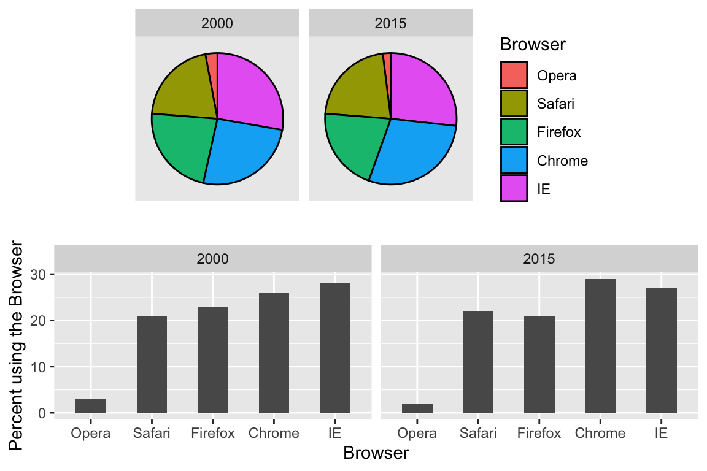
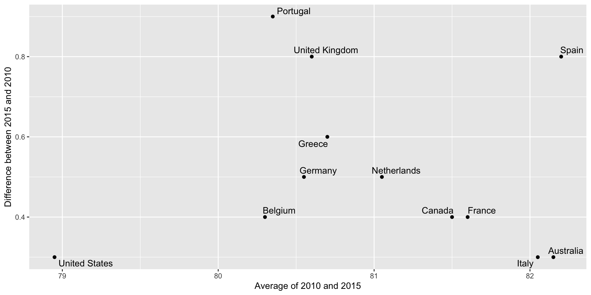
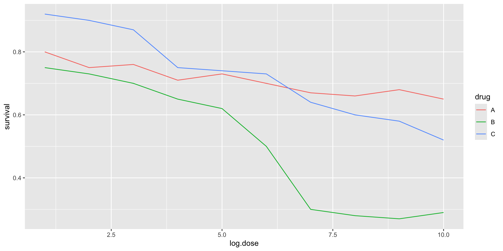

| Browser | 2000 | 2015 |
|---|---|---|
| Opera | 3 | 2 |
| Safari | 21 | 22 |
| Firefox | 23 | 21 |
| Chrome | 26 | 29 |
| IE | 28 | 27 |
Data Visualization Principles
2024-08-07
Some motivation
The next few slides are examples of infogrpahics that don’t follow data visualization principles.
We use them as motivation
Several of the examples come from here: https://venngage.com/blog/bad-infographics/
Some motivation

Some motivation

Some motivation

Some motivation

Some motivation

Some motivation

Some motivation

Data visualization principles
We provide some general principles we can use as a guide for effective data visualization.
Much of this section is based on a talk by Karl Broman titled Creating Effective Figures and Tables and includes some of the figures which were made with code that Karl makes available on his GitHub repository, as well as class notes from Peter Aldhous’ Introduction to Data Visualization course.
Data visualization principles
Following Karl’s approach, we show some examples of plot styles we should avoid, explain how to improve them, and use these as motivation for a list of principles.
We compare and contrast plots that follow these principles to those that don’t.
Data visualization principles
The principles are mostly based on research related to how humans detect patterns and make visual comparisons.
The preferred approaches are those that best fit the way our brains process visual information.
When deciding on a visualization approach, it is also important to keep our goal in mind.
Data visualization principles
We may be comparing a
- viewable number of quantities
- describing distributions for categories or numeric values
- comparing the data from two groups
- or describing the relationship between two variables.
Encoding data using visual cues
We start by describing some principles for visualy encoding numerical values. There are several approaches at our disposal including:
- aligned lengths
- position
- angles
- area
- brightness
- color hue
Encoding data using visual cues
Example:
Suppose we want to report the results from two hypothetical polls regarding browser preference taken in 2000 and then 2015.
For each year, we are simply comparing five quantities – the five percentages for Opera, Safari, Firefox,IE, and Chrome.
Encoding data using visual cues
- A widely used graphical representation of percentages, popularized by Microsoft Excel, is the pie chart:
Encoding data using visual cues
Here we are representing quantities with both areas and angles, since both the angle and area of each pie slice are proportional to the quantity the slice represents.
This turns out to be a sub-optimal choice since, as demonstrated by perception studies, humans are not good at precisely quantifying angles and are even worse when area is the only available visual cue.
Encoding data using visual cues
The donut chart is an example of a plot that uses only area:
Compare 2000 to 2015
Can you determine the actual percentages and rank the browsers’ popularity?
Can you see how the percentages changed from 2000 to 2015?

Show the numbers
A better approach is to simply show the numbers. It is not only clearer, but would also save on printing costs if printing a paper copy:
Barplots
Length is the best visual cue:
If foreced to make a pie chart
Label each pie slice with its respective percentage so viewers do not have to infer them from the angles or area:
Know when to include 0
When using barplots, it is misinformative not to start the bars at 0.
This is because, by using a barplot, we are implying the length is proportional to the quantities being displayed.
By avoiding 0, relatively small differences can be made to look much bigger than they actually are.
This approach is often used by politicians or media organizations trying to exaggerate a difference.
Know when to include 0
Below is an illustrative example used by Peter Aldhous in this lecture.

(Source: Fox News, via Media Matters.)
Know when to include 0
Here is the correct plot:
Know when to include 0
Another examples:

(Source: Fox News, via Flowing Data.)
Know when to include 0
And here is the correct plot:
Know when to include 0
One more example:

(Source: Venezolana de Televisión via Pakistan Today and Diego Mariano.)
Know when to include 0
Here is the appropriate plot:
Know when to include 0
When using position rather than length, it is then not necessary to include 0.
In particularly when comparing differences between to within groups variability.
Do not distort quantities
During President Barack Obama’s 2011 State of the Union Address, the following chart was used to compare the US GDP to the GDP of four competing nations:

(Source: The 2011 State of the Union Address)
Do not distort quantities
Here is comparison of using radius versus area:
Do not distort quantities
- ggplot2 defaults to using area rather than radius.
Of course, in this case, we really should be using length:
Order categories by a meaningful value
When one of the axes is used to show categories the default ggplot2 behavior is to order the categories alphabetically when they are defined by character strings.
If they are defined by factors, they are ordered by the factor levels.
We rarely want to use alphabetical order.
Instead, we should order by a meaningful quantity.
Order categories by a meaningful value
Note that the plot on the right is more informative:
Order categories by a meaningful value
Here is another example:
Show the data
We have focused on displaying single quantities across categories. We now shift our attention to displaying data, with a focus on comparing groups.
Supppose we want to describe the heigh data to an extra-terrestrial.
Show the data
A commonly used plot, popularized by Microsoft Excel, is a barplot like this:
Show the data
Show the data
But this plot can be improved with jitter as there is much over-plotting
Histograms
Since there are so many points, it is more effective to show distributions rather than individual points. We therefore show histograms for each group:
Ease comparisons
Use common axes
If horizontal comparison, stack graphs vertically
If vertical comparison, stack graphs horizontally
Stack vertically
Same axis
Boxplot is a vertical
Stack horizontally
Contrast and compare
Consider transformations
Here is a terribly plot comparing population across continents
Two countries drive average
Log, square root or logit transformations
Using a log transformation here provides a much more informative plot.
Compare these two plots:
Visual cues to be compared should be adjacent
Note that it is hard to compare 1970 to 2020 by country:
Visual cues to be compared should be adjacent
Much easier if they are adjacent
Use color
The comparison becomes even easier to make if we use color to denote the two things we want to compare:
Think of the color blind
Approximately 1 in 12 men (8%) and 1 in 200 women (0.5%) worldwide are color blind.
The most common type of color blindness is red-green color blindness, which affects around 99% of all color blind individuals.
The prevalence of blue-yellow color blindness and total color blindness (achromatopsia) is much lower.
An example of how we can use a color blind friendly palette is described here.
Think of the color blind
- Example of color-blind-friendly color palette:
Plots for two variables
In general, you should use scatterplots to visualize the relationship between two variables.
However, there are some exceptions.
- We describe two alternative plots here:
- slope chart
- Bland-Altman plot
Slope charts
Slope charts adds angle as a visual cue, useful when comparing two groups and each element across two variables, such as years.
Scatterplot version
Bland-Altman plot
Shows difference in the y-axis and average on the x-axis.
Encoding a third variable
We can use
different colors or shapes for categoris
areas, brightness or hue for continuous values
Encoding a third variable
Below is an example that encodes three variables: OPEC membership, region, and population.
Point shapes available in R
Using intensity or hue
When selecting colors to quantify a numeric variable, we choose between two options: sequential and diverging.
Sequential colors
Sequential colors are suited for data that goes from high to low. High values are clearly distinguished from low values. Here are some examples offered by the package RColorBrewer:
Diverging colors
Diverging colors are used to represent values that diverge from a center. We put equal emphasis on both ends of the data range: higher than the center and lower than the center.

Avoid pseudo-3D plots
The figure below, taken from the scientific literature, shows three variables: dose, drug type and survival:

Avoid pseudo-3D plots
- Humans are not good at seeing in three dimensions and our limitation is even worse with regard to pseudo-three-dimensions.
Avoid pseudo-3D plots
Try to determine the values of the survival variable in the previous plot.
Can you tell when the purple ribbon intersects the red one?
Avoid pseudo-three-dimensional plots
This is an example in which we can easily use color to represent the categorical variable instead of using a pseudo-3D:
Avoid pseudo-three-dimensional plots
Pseudo-3D is sometimes used completely gratuitously: plots are made to look 3D even when the 3rd dimension does not represent a quantity. This only adds confusion and makes it harder to relay your message. We show two examples:
Avoid pseudo-three-dimensional plots


(Images courtesy of Karl Broman)
Avoid too many significant digits
By default, statistical software like R returns many significant digits.
The default behavior in R is to show 7 significant digits.
That many digits often adds no information and the added visual clutter can make it hard for the viewer to understand the message.
Avoid too many significant digits
As an example, here are the per 10,000 disease rates, computed from totals and population in R, for California across the five decades:
| state | year | Measles | Pertussis | Polio |
|---|---|---|---|---|
| California | 1940 | 37.8826320 | 18.3397861 | 0.8266512 |
| California | 1950 | 13.9124205 | 4.7467350 | 1.9742639 |
| California | 1960 | 14.1386471 | NA | 0.2640419 |
| California | 1970 | 0.9767889 | NA | NA |
| California | 1980 | 0.3743467 | 0.0515466 | NA |
Avoid too many significant digits
- We are reporting precision up to 0.00001 cases per 10,000, a very small value in the context of the changes that are occurring across the dates.
| state | year | Measles | Pertussis | Polio |
|---|---|---|---|---|
| California | 1940 | 37.8826320 | 18.3397861 | 0.8266512 |
| California | 1950 | 13.9124205 | 4.7467350 | 1.9742639 |
| California | 1960 | 14.1386471 | NA | 0.2640419 |
| California | 1970 | 0.9767889 | NA | NA |
| California | 1980 | 0.3743467 | 0.0515466 | NA |
Avoid too many significant digits
- In this case, two significant figures is more than enough and clearly makes the point that rates are decreasing:
| state | year | Measles | Pertussis | Polio |
|---|---|---|---|---|
| California | 1940 | 37.9 | 18.3 | 0.8 |
| California | 1950 | 13.9 | 4.7 | 2.0 |
| California | 1960 | 14.1 | NA | 0.3 |
| California | 1970 | 1.0 | NA | NA |
| California | 1980 | 0.4 | 0.1 | NA |
Avoid too many significant digits
Useful ways to change the number of significant digits or to round numbers are
signifround
You can define the number of significant digits globally by setting options like this: options(digits = 3).
Values compared in columns
Another principle related to displaying tables is to place values being compared on columns rather than rows. Compare these two presentations:
| state | disease | 1940 | 1950 | 1960 | 1970 | 1980 |
|---|---|---|---|---|---|---|
| California | Measles | 37.9 | 13.9 | 14.1 | 1 | 0.4 |
| California | Pertussis | 18.3 | 4.7 | NA | NA | 0.1 |
| California | Polio | 0.8 | 2.0 | 0.3 | NA | NA |
Values compared in columns
Another principle related to displaying tables is to place values being compared on columns rather than rows. Compare these two presentations:
| state | year | Measles | Pertussis | Polio |
|---|---|---|---|---|
| California | 1940 | 37.9 | 18.3 | 0.8 |
| California | 1950 | 13.9 | 4.7 | 2.0 |
| California | 1960 | 14.1 | NA | 0.3 |
| California | 1970 | 1.0 | NA | NA |
| California | 1980 | 0.4 | 0.1 | NA |
Know your audience
Graphs can be used for
our own exploratory data analysis,
to convey a message to experts, or
to help tell a story to a general audience.
Make sure that the intended audience understands each element of the plot.